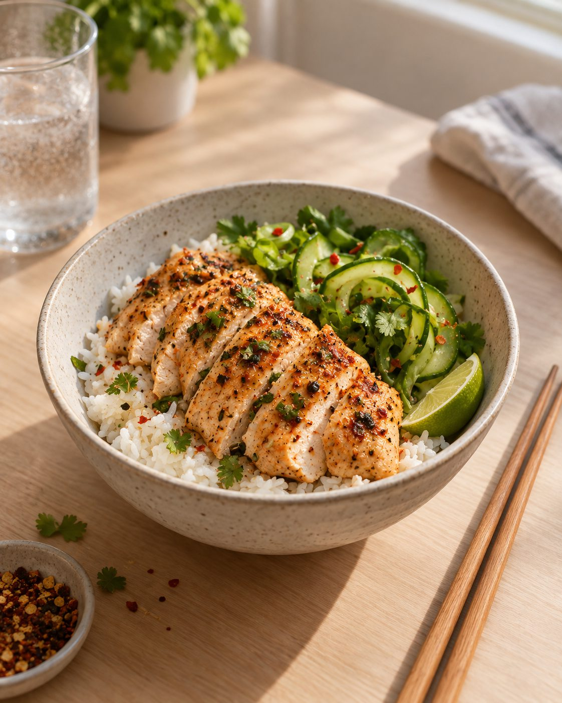

Proteinbar og shake
- Laget av pulver, sirup og aromastoffer
- Smaker søtt, også når du er sulten på middag
- Lang ingrediensliste med ord du må slå opp
- Føles som et tilskudd, ikke som et måltid
Hvorfor kylling?
Skal du ha i deg protein uten å lage mat, ender du fort opp med en bar, en shake eller en søndag med seks matbokser. Vi ville ha ordentlig mat som var klar når vi var.
Så vi begynte med kylling.
Problemet
Vi sammenligner format og bruk – ikke næringsinnhold. Tall kommer når de er dokumentert gjennom næringsanalyse.
Kyllingen er stekt og krydret før den pakkes. Du slipper steking, krydring og oppvask – vi gjorde jobben på forhånd.

Det er kyllingbryst. Ikke pulver med smak av kylling, ikke en bar med kyllingprotein i. Skiv den opp over ris, legg den i en wrap, eller spis den som den er.

Skole, jobb, trening eller en lang busstur. Pakken er flat, tar liten plass i sekken og trenger verken bestikk eller tallerken.

Den er laget for å smake godt rett fra kjøleskapet. Har du en panne eller mikro i nærheten, er den fort varm. Begge deler er riktig.

Hva er i pakken
Kyllingfilet og krydder. Dette er smakene i hver av de tre variantene. Den fullstendige ingrediensdeklarasjonen – med mengder, salt og allergener – legges ut her så snart resepten er låst.
Første batch er under arbeid. Legg igjen e-posten din, så får du én beskjed når kyllingen er klar – og hvor du får tak i den.
Sett meg på listaIngen nyhetsbrev, ingen mas. Vi sender én e-post når vi lanserer. Det er alt adressen brukes til.
Lurer du på noe først? Se spørsmål og svar.